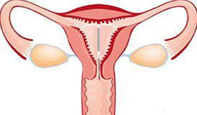

Prepare pregnant second child treasure mother concern us for your answer
-
35对高龄产妇
35 to the aged
如何备孕
• 年龄越大，卵子的活力低，直接影响胚胎
的质量，因此要尽早受孕• 保持充足睡眠、充足的营养
备孕检查
高龄产妇的胎儿畸形率相对较高，需在怀孕之前做全面检查。
备孕饮食注意哪些 -
第一胎剖宫产
Caesarean section
注意事项
• 剖腹产后再生育，需在两年后再孕
• 妊娠晚期要防止腹部受挤压
• 宜提前住院待产
备孕检查
头胎剖宫产女性要先做疤痕检查，避免瘢痕妊娠，前置胎盘情况。
第二胎能顺产吗 -
第一胎后上环
After the first ring
如何备孕
• 计划再孕前半年取环
• 取环后休息3天并禁欲3-5天
• 取环过程避免感染延误怀孕时机
备孕检查
从优生角度来看，摘环后做生殖系统检查确定身体状况，选择合适时间
 取环后多久能怀孕 -
第一胎难产
Dystocia
注意事项
• 饮食上面注意，控制第二个胎儿的体重，
经常做锻炼• 定期到医院做产检，掌握发育状况
备孕检查
一胎难产女性做好做骨盆测量，避免第二胎再次造成难产。
二胎还会难产吗 -
第一胎妊高症
Pregnancy induced
注意事项
• 不可自行擅自服用降压药，应在临床医生
的指导下调整用药• 保持心情愉快，避免情绪激动
备孕检查
头胎妊高症女性做血压血糖检查，全面了解自身情况做好孕前调理。
妊高症的几率大吗 -
第一胎早产
35 to the aged
如何备孕
• 出现下腹坠胀，应卧床休息
• 孕期要节制性生活
• 定期进行产前检查，减少并发症
备孕检查
第一个宝宝是早产儿，子宫颈检查是必不可少的，避免二次风险。
第二胎也会早产吗
进入专家诊室，5S收到回复